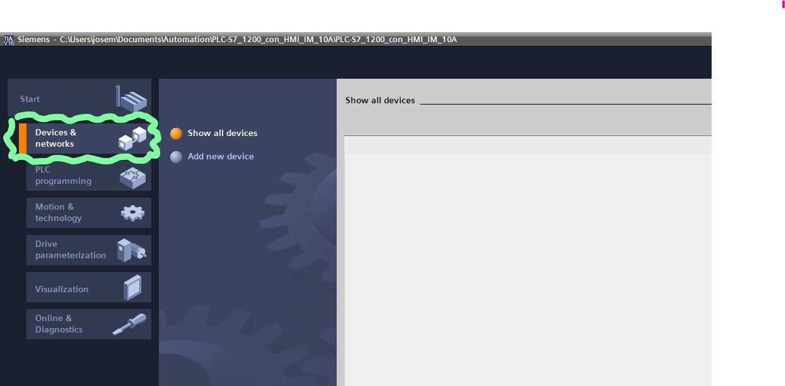
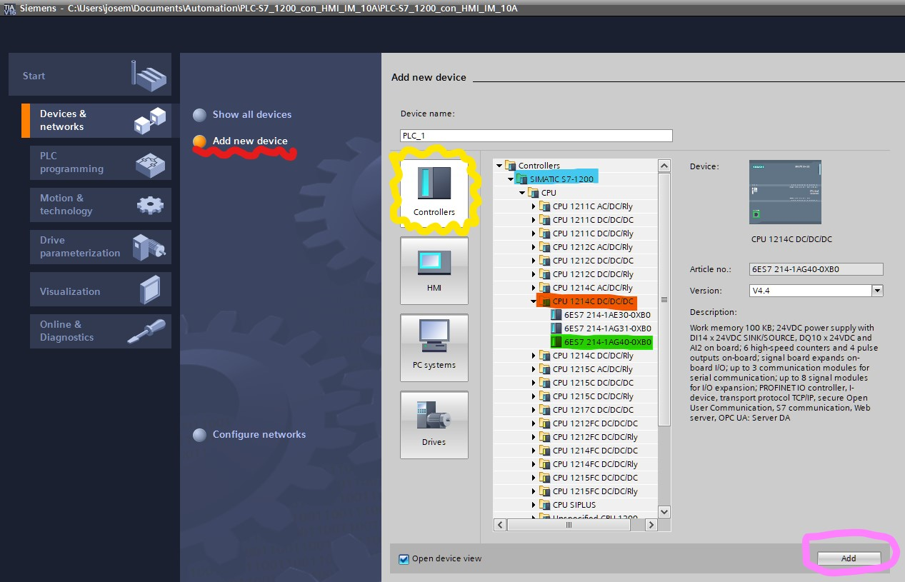
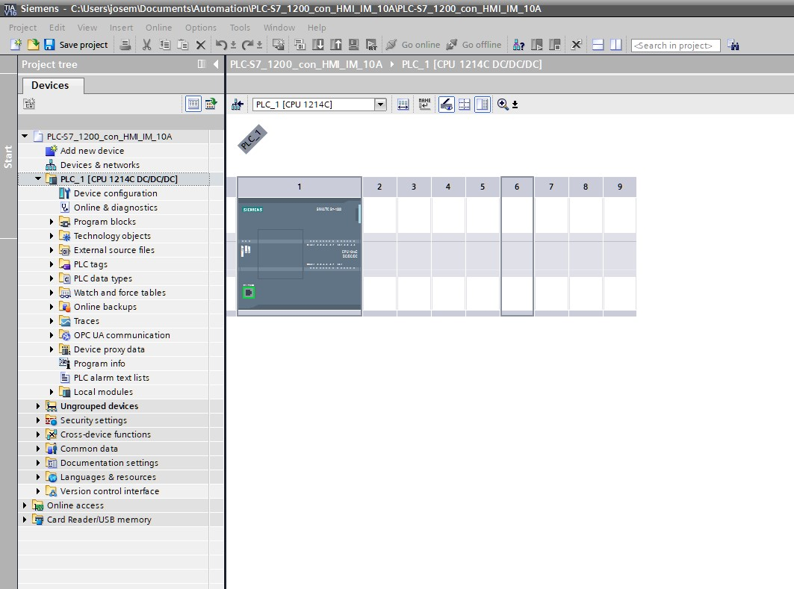
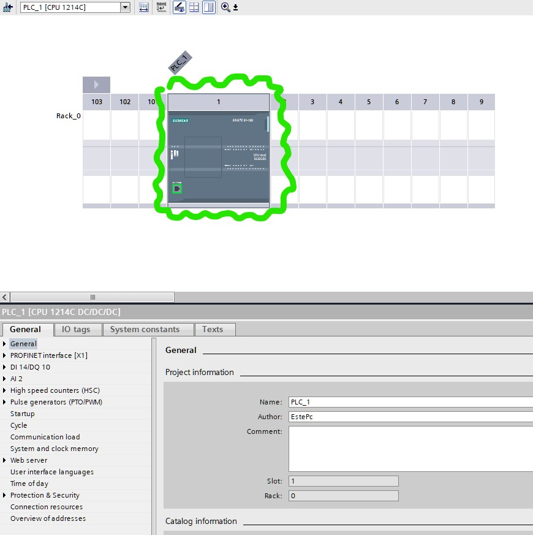
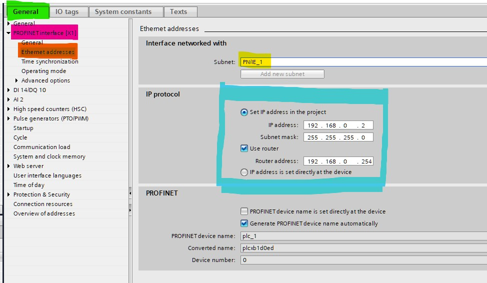

2. Selección de PLC y configuración de dirección IP
2.1. Selección de PLC
Dirijase al botón de dispositivos y redes de su proyecto, si su software se encuentra en inglés seleccione Devices & networks,

Siga los siguientes pasos:
- Seleccione
Add new device(Añadir nuevo dispositivo) como en la imagen que se encuentra subrayado en color rojo. - Seleccione
Controllers(controladores) tal como en la imagen que se encuentra encerrado en amarillo. - Abra la carpeta
SIMATIC S7-1200. subrayado en color azul. - Despliegue la carpeta de CPU.
- Abra la carpeta
CPU 1214CDC/DC/DCque se encuentra subrayada en color Naranja. - Seleccione el dispositivo
6ES7 214-1AG40-0XB0enmarcado en color verde. - Oprima el boton encerrado en color rosa.

Al finalizar la selección de su dispositivo puede dar un primer vistazo de su PLC en su ventana principal,

2.2. Configuración de dirección IP del PLC
Lo siguiente será configurar la dirección IP del PLC con los siguietnes pasos
- Seleccione el PLC (clickeando sobre la interfaz del PLC), tal como en la imagen (el icono encerrado en verde):

como resultado se desplegarán una serie de opciones en la parte inferiór.
- Selecciona la pesataña de
General(enmarcada en verde en la imagen inferiór). - Una serie subopciones son desplegadas, selecciona la opción que dice
PROFINET interface [x1](remarcada en rosa). - Selecciona la configuración de
Ethernet addresses(enmarcada en naranja). Esto mostrará un centro de configuración a su derecha con algunas opciones. - En el recuadro de
Interface networked with(Interfaz conectada en red con), añada una subredPN/1E_1(enmarcada en amarillo) en el comboboxSubnet. - En el recuadro
IP protocol(encerrado en color azul) complete los campos de acuerdo a su configuración física de PLC, swicheador:- inserte la dirección IP del PLC en el campo de
IP address. - coloque la mascara de subred en el campo de
subnet mask. - coloque la dirección del router (swicheador) en el campo de
Router address.
- inserte la dirección IP del PLC en el campo de

En el siguiente capítulo se empleará la selección de un dispositivo HMI en TIA PORTAL y explicará como se configurará la interfaz en la pantalla.